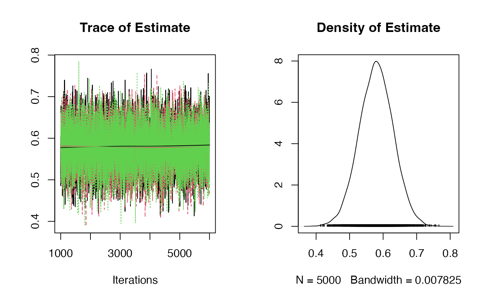

R/mr_ivw_rjags.R
mr_ivw_rjags.RdBayesian inverse variance weighted model with a choice of prior distributions fitted using JAGS.
mr_ivw_rjags( object, prior = "default", betaprior = "", n.chains = 3, n.burn = 1000, n.iter = 5000, seed = NULL, ... )
| object | A data object of class |
|---|---|
| prior | A character string for selecting the prior distributions;
|
| betaprior | A character string in JAGS syntax to allow a user defined prior for the causal effect. |
| n.chains | Numeric indicating the number of chains used in the MCMC estimation, the default is |
| n.burn | Numeric indicating the burn-in period of the Bayesian MCMC estimation. The default is |
| n.iter | Numeric indicating the number of iterations in the Bayesian MCMC estimation. The default is |
| seed | Numeric indicating the random number seed. The default is the rjags default. |
| ... | Additional arguments passed through to |
An object of class ivwjags containing the following components:
The mean of the simulated causal effects
Standard deviation of the simulated causal effects
The credible interval for the causal effect, which indicates the lower(2.5%), median (50%) and upper intervals (97.5%)
Output of the Bayesian MCMC samples with the different chains
The specified priors
Burgess, S., Butterworth, A., Thompson S.G. Mendelian randomization analysis with multiple genetic variants using summarized data. Genetic Epidemiology, 2013, 37, 7, 658-665 https://dx.doi.org/10.1002/gepi.21758.
#> Estimate SD 2.5% 50% 97.5% #> Causal Effect 0.5799282 0.05169926 0.4786248 0.5802501 0.6800133summary(fit)#> Prior : #> #> Estimate ~ dnorm(0, 1E-3) #> #> Estimation results: #> #> MCMC iterations = 6000 #> Burn in = 1000 #> Sample size by chain = 5000 #> Number of Chains = 3 #> Number of SNPs = 14 #> #> Estimate SD 2.5% 50% 97.5% #> Causal Effect 0.5799282 0.05169926 0.4786248 0.5802501 0.6800133# 90% credible interval fitdf <- do.call(rbind.data.frame, fit$samples) cri90 <- quantile(fitdf$Estimate, probs = c(0.05,0.95)) print(cri90)#> 5% 95% #> 0.4945373 0.6641041